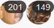

i made a argument?
Isaac’s arguement is NOT the main arguement by far
I wasn’t random. @Margaret the Fool claim, claims I am Neut/Scum. That’s why I claimed. Like I said, first game I was CW, this game I’m even more boring as Physician.
Yeah, one of your reasons for a no Met lynch was because and I quote “Scorned is evil”
ur evil
Okay look, if no one’s stating why I’m being pushed on, can I just go sleep?
Squid ignore Isaacs points and please just respond to mine.
1 Like
#allneutsout. anyone with me?
Start actively asking these questions to others to get some answers
yea im stupid
1 Like
Hippo, ignore Squid for a second and please respond to me
nah fuck this, bye.
That’s almost impossible since Isaac keeps clogging up the thread with bullshit
lol wtf?
1 Like
- To get you more involved and to see your reaction.
- I started it.
- Go to sleep, we aren’t lynching you in the next 10 hours at least. We will use this day to the fullest.
that’s no excuse for reading a post lol

No wonder I can’t see Hippo’s posts clearly
is something wrong with you that you can’t see hippo’s post or something?
ill quote it if its hard for you to see
Fuck this, fuck you, YOU KNEW MY CLASS AND YOU WANTED TO GET ME MORE INVOLVED? You should know by now I’m British so you should’ve assumed I was asleep instead of starting a push legit before I could possibly defend myself.
With literally no reasoning. You just begun it to get a quick lynch on me while I was “sleeping”.
Okay goodnight, but, before I go night night. /vote Hippo